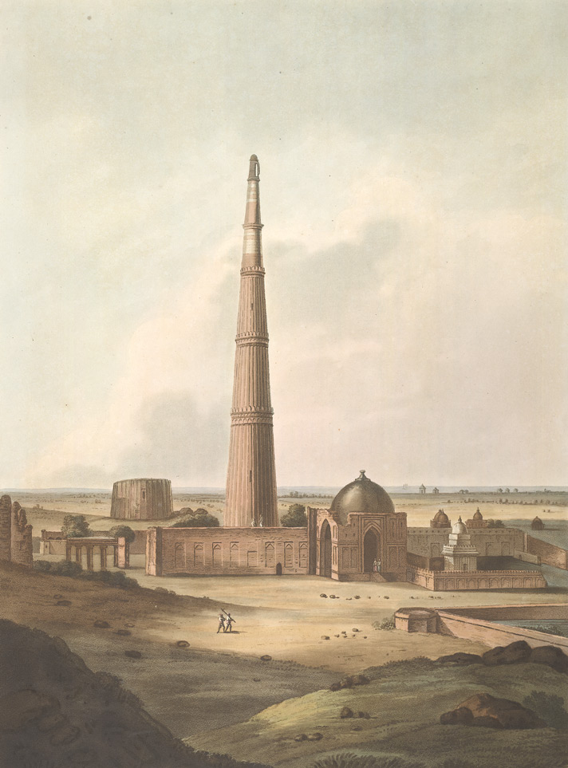
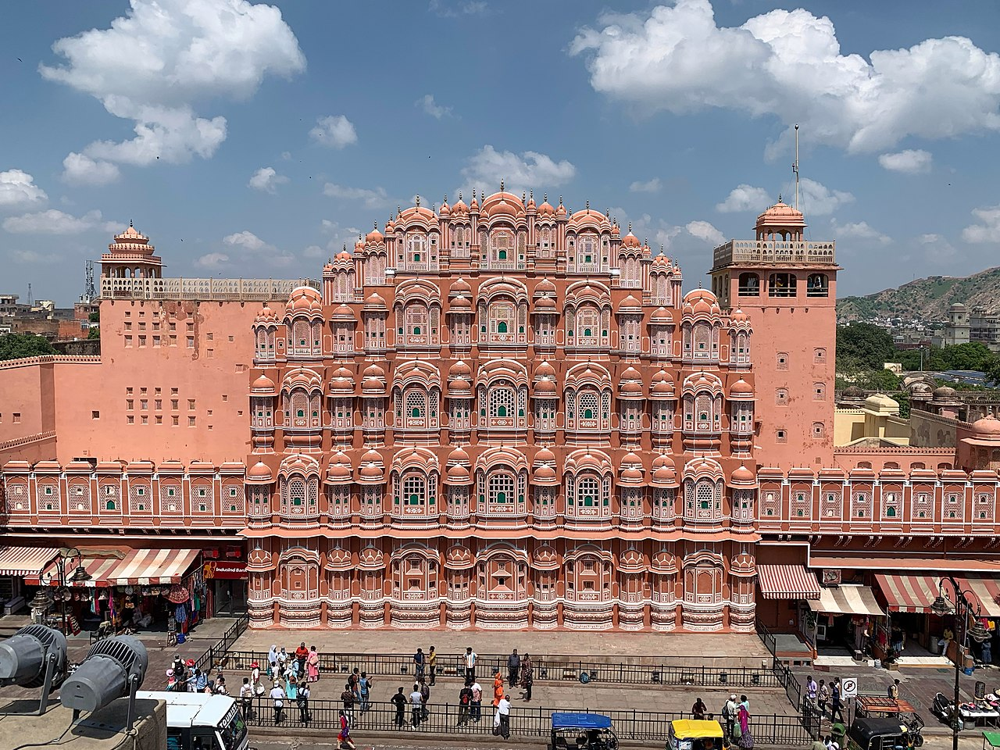
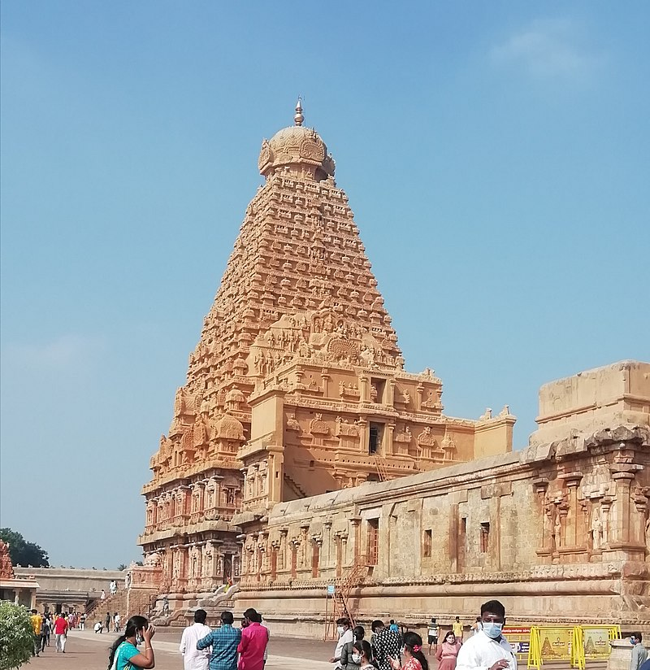

TAJ MAHAL
 Taj Mahal is an ivory-white marble mausoleum on the right bank of the river Yamuna in Agra, Uttar Pradesh, India. It was commissioned in 1631 by the fifth Mughal emperor, Shah Jahan to house the tomb of his favourite wife, Mumtaz Mahal; it also houses the tomb of Shah Jahan himself. The tomb is the centrepiece of a 17-hectare (42-acre) complex, which includes a mosque and a guest house, and is set in formal gardens bounded on three sides by a crenellated wall.Construction of the mausoleum was essentially completed in 1643, but work continued on other phases of the project for another 10 years. The Taj Mahal complex is believed to have been completed in its entirety in 1653 at a cost estimated at the time to be around ₹32 million, which in 2023 would be approximately ₹35 billion.The construction project employed some 20,000 artisans under the guidance of a board of architects led by Ustad Ahmad Lahori, the emperor's court architect. Various types of symbolism have been employed in the Taj to reflect natural beauty and divinity.
Taj Mahal is an ivory-white marble mausoleum on the right bank of the river Yamuna in Agra, Uttar Pradesh, India. It was commissioned in 1631 by the fifth Mughal emperor, Shah Jahan to house the tomb of his favourite wife, Mumtaz Mahal; it also houses the tomb of Shah Jahan himself. The tomb is the centrepiece of a 17-hectare (42-acre) complex, which includes a mosque and a guest house, and is set in formal gardens bounded on three sides by a crenellated wall.Construction of the mausoleum was essentially completed in 1643, but work continued on other phases of the project for another 10 years. The Taj Mahal complex is believed to have been completed in its entirety in 1653 at a cost estimated at the time to be around ₹32 million, which in 2023 would be approximately ₹35 billion.The construction project employed some 20,000 artisans under the guidance of a board of architects led by Ustad Ahmad Lahori, the emperor's court architect. Various types of symbolism have been employed in the Taj to reflect natural beauty and divinity.
QUTUB MINAR
 The Qutb Minar, also spelled Qutub Minar and Qutab Minar, is a minaret and "victory tower" that forms part of the Qutb complex, which lies at the site of Delhi's oldest fortified city, Lal Kot, founded by the Tomar Rajputs. It is a UNESCO World Heritage Site in the Mehrauli area of South Delhi, India. It is one of the most visited tourist spots in the city, mostly built between 1199 and 1220.It can be compared to the 62-metre all-brick Minaret of Jam in Afghanistan, of 1190, which was constructed a decade or so before the probable start of the Delhi tower. The surfaces of both are elaborately decorated with inscriptions and geometric patterns. The Qutb Minar has a shaft that is fluted with "superb stalactite bracketing under the balconies" at the top of each stage. In general, minarets were slow to be used in India and are often detached from the main mosque where they exist.
FOR MORE INFORMATIONINDIA GATE
 The India Gate (formerly known as All India War Memorial) is a war memorial located near the Kartavya path on the eastern edge of the "ceremonial axis" of New Delhi, formerly called Rajpath. It stands as a memorial to 84,000 soldiers of the Indian Army who died between 1914 and 1921 in the First World War, in France, Flanders, Mesopotamia, Persia, East Africa, Gallipoli and elsewhere in the Near and the Far East, and the Third Anglo-Afghan War. 13,300 servicemen's names, including some soldiers and officers from the United Kingdom, are inscribed on the gate. Designed by Sir Edwin Lutyens, the gate evokes the architectural style of the memorial arch such as the Arch of Constantine, in Rome, and is often compared to the Arc de Triomphe in Paris, and the Gateway of India in Mumbai.Following the Bangladesh Liberation war in 1972, a structure consisting of a black marble plinth with a reversed rifle, capped by a war helmet and bounded by four eternal flames, was built beneath the archway. This structure, called Amar Jawan Jyoti (Flame of the Immortal Soldier), has since 1971 served as India's tomb of the unknown soldier. India Gate is counted amongst the largest war memorials in India and every Republic Day, the Prime Minister visits the gate to pay their tributes to the Amar Jawan Jyoti, following which the Republic Day parade starts. India Gate is often a location for civil society protests.
The India Gate (formerly known as All India War Memorial) is a war memorial located near the Kartavya path on the eastern edge of the "ceremonial axis" of New Delhi, formerly called Rajpath. It stands as a memorial to 84,000 soldiers of the Indian Army who died between 1914 and 1921 in the First World War, in France, Flanders, Mesopotamia, Persia, East Africa, Gallipoli and elsewhere in the Near and the Far East, and the Third Anglo-Afghan War. 13,300 servicemen's names, including some soldiers and officers from the United Kingdom, are inscribed on the gate. Designed by Sir Edwin Lutyens, the gate evokes the architectural style of the memorial arch such as the Arch of Constantine, in Rome, and is often compared to the Arc de Triomphe in Paris, and the Gateway of India in Mumbai.Following the Bangladesh Liberation war in 1972, a structure consisting of a black marble plinth with a reversed rifle, capped by a war helmet and bounded by four eternal flames, was built beneath the archway. This structure, called Amar Jawan Jyoti (Flame of the Immortal Soldier), has since 1971 served as India's tomb of the unknown soldier. India Gate is counted amongst the largest war memorials in India and every Republic Day, the Prime Minister visits the gate to pay their tributes to the Amar Jawan Jyoti, following which the Republic Day parade starts. India Gate is often a location for civil society protests.
HAWA MAHAL
The Hawa Mahal is a palace in the city of Jaipur, India. Built from red and pink sandstone, it is on the edge of the City Palace, Jaipur, and extends to the Zenana, or women's chambers. The structure was built in 1799 by the Maharaja Sawai Pratap Singh, grandson of Maharaja Sawai Jai Singh, the founder of the city of Jhunjhunu in the state of Rajasthan. He was so inspired by the unique structure of Khetri Mahal that he built this grand and historical palace.It was designed by Lal Chand Ustad. Its five-floor exterior is akin to a honeycomb with its 953 small windows called Jharokhas decorated with intricate latticework.The original intent of the lattice design was to allow royal ladies to observe everyday life and festivals celebrated in the street below without being seen. This architectural feature also allowed cool air from the Venturi effect to pass through, thus making the whole area more pleasant during the high temperatures in summer. Many people see the Hawa Mahal from the street view and think it is the front of the palace, but it is the back.In 2006, renovation works on the Mahal were undertaken, after a gap of 50 years, to give a facelift to the monument at an estimated cost of Rs 4.568 million.[6] The corporate sector lent a hand to preserve the historical monuments of Jaipur and the Unit Trust of India has adopted Hawa Mahal to maintain it. The palace is an extended part of a huge complex. The stone-carved screens, small casements, and arched roofs are some of the features of this popular tourist spot. The monument also has delicately modelled hanging cornices.
FOR MORE INFORMATIONBrihadisvara Temple
Brihadishvara Temple, called Rajarajesvaram (lit'Lord of Rajaraja') by its builder, and known locally as Thanjai Periya Kovil (lit'Thanjavur Big Temple') and Peruvudaiyar Kovil, is a Shaivite Hindu temple built in a Chola architectural style located on the south bank of the Cauvery river in Thanjavur, Tamil Nadu, India. It is one of the largest Hindu temples and an exemplar of Tamil architecture. It is also called Dakshina Meru (Meru of the South). Built by Chola emperor Rajaraja I between 1003 and 1010 CE, the temple is a part of the UNESCO World Heritage Site known as the "Great Living Chola Temples", along with the Chola-era Gangaikonda Cholapuram temple and Airavatesvara temple, which are about 70 kilometres (43 mi) and 40 kilometres (25 mi) to its northeast respectively.The original monuments of this 11th-century temple were built around a moat. It included gopura, the main temple, its massive tower, inscriptions, frescoes, and sculptures predominantly related to Shaivism, but also of Vaishnavism and Shaktism. The temple was damaged in its history and some artwork is now missing. Additional mandapam and monuments were added in the centuries that followed. The temple now stands amidst fortified walls that were added after the 16th century.
FOR MORE INFORMATION